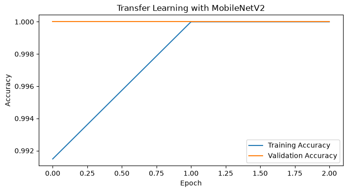

Transfer Learning#
Transfer Learning is a machine learning technique where a model trained on one task is reused for a different but related task. Instead of training a neural network from scratch, we start with a pre-trained model that has already learned useful features from a large dataset.
Why Does Transfer Learning Work?#
Early layers of neural networks learn general features. In the case of images, this might be:
Edges
Colors
Later layers learn task-specific features. For example, given a classification dog versus cat task, later layers might learn:
Length of snout
Size of ears
If we remove a few of the last few layers that have this task-specific tuning, we still have a neural network with some tuning to the dataset of images. We can then repurpose this base model. A great analogy: a Romance language speaker might find it easy to learn another Romance language. The reason is because the Romance language speaker has learned the underlying structure of the Romance languages.
# preliminaries
import tensorflow as tf
import numpy as np
import matplotlib.pyplot as plt
dataset_path = tf.keras.utils.get_file(
"flower_photos",
"https://storage.googleapis.com/download.tensorflow.org/example_images/flower_photos.tgz",
untar=True
)
We’ll pick a set to train on and a set to test on:
IMG_SIZE = (224, 224)
BATCH_SIZE = 32
train_dataset = tf.keras.utils.image_dataset_from_directory(
dataset_path,
validation_split=0.2,
subset="training",
seed=123,
image_size=IMG_SIZE,
batch_size=BATCH_SIZE
)
validation_dataset = tf.keras.utils.image_dataset_from_directory(
dataset_path,
validation_split=0.2,
subset="validation",
seed=123,
image_size=IMG_SIZE,
batch_size=BATCH_SIZE
)
Found 3670 files belonging to 1 classes.
Using 2936 files for training.
Found 3670 files belonging to 1 classes.
Using 734 files for validation.
Some pre-processing:
normalization_layer = tf.keras.layers.Rescaling(1.0 / 255)
train_dataset = train_dataset.map(
lambda x, y: (normalization_layer(x), y)
)
validation_dataset = validation_dataset.map(
lambda x, y: (normalization_layer(x), y)
)
AUTOTUNE = tf.data.AUTOTUNE
train_dataset = train_dataset.prefetch(AUTOTUNE)
validation_dataset = validation_dataset.prefetch(AUTOTUNE)
The ImageNet Dataset & MobileNetV2#
ImageNet contains:
More than 14 million images
Over 20,000 categories
Approximately 1,000 commonly used classes for benchmarking
Examples include:
Dogs
Cats
Birds
Cars
Flowers
Fruits
Buildings
From the 2018 paper here, MobileNetV2 is a ImageNet-trained neural network available to us via tensorflow. We will take this neural network to be our base model that we will not re-train:
base_model = tf.keras.applications.MobileNetV2(
input_shape=(224, 224, 3),
include_top=False,
weights="imagenet"
)
base_model.trainable = False
We will add a few layers:
model = tf.keras.Sequential([
base_model,
tf.keras.layers.GlobalAveragePooling2D(),
tf.keras.layers.Dense(12, activation="relu"),
tf.keras.layers.Dropout(0.2),
tf.keras.layers.Dense(5, activation="softmax") # 5 flower classes
])
model.summary()
Model: "sequential"
┏━━━━━━━━━━━━━━━━━━━━━━━━━━━━━━━━━┳━━━━━━━━━━━━━━━━━━━━━━━━┳━━━━━━━━━━━━━━━┓ ┃ Layer (type) ┃ Output Shape ┃ Param # ┃ ┡━━━━━━━━━━━━━━━━━━━━━━━━━━━━━━━━━╇━━━━━━━━━━━━━━━━━━━━━━━━╇━━━━━━━━━━━━━━━┩ │ mobilenetv2_1.00_224 │ (None, 7, 7, 1280) │ 2,257,984 │ │ (Functional) │ │ │ ├─────────────────────────────────┼────────────────────────┼───────────────┤ │ global_average_pooling2d │ (None, 1280) │ 0 │ │ (GlobalAveragePooling2D) │ │ │ ├─────────────────────────────────┼────────────────────────┼───────────────┤ │ dense (Dense) │ (None, 12) │ 15,372 │ ├─────────────────────────────────┼────────────────────────┼───────────────┤ │ dropout (Dropout) │ (None, 12) │ 0 │ ├─────────────────────────────────┼────────────────────────┼───────────────┤ │ dense_1 (Dense) │ (None, 5) │ 65 │ └─────────────────────────────────┴────────────────────────┴───────────────┘
Total params: 2,273,421 (8.67 MB)
Trainable params: 15,437 (60.30 KB)
Non-trainable params: 2,257,984 (8.61 MB)
Note that we have almost 2.3 million parameters in total here. But, only 15 thousand of them will be trained. One can imagine the computational savings… Let’s compile:
model.compile(
optimizer="adam",
loss="sparse_categorical_crossentropy",
metrics=["accuracy"]
)
WARNING:tensorflow:TensorFlow GPU support is not available on native Windows for TensorFlow >= 2.11. Even if CUDA/cuDNN are installed, GPU will not be used. Please use WSL2 or the TensorFlow-DirectML plugin.
By only training these 15 thousand parameters, we still get exceptional accuracy for our dataset while saving time and computation:
network = model.fit(
train_dataset,
validation_data=validation_dataset,
epochs=3,
verbose=False
)
loss, accuracy = model.evaluate(validation_dataset)
print(f"Validation Accuracy: {accuracy:.4f}")
plt.figure(figsize=(8, 4))
plt.plot(network.history["accuracy"], label="Training Accuracy")
plt.plot(network.history["val_accuracy"], label="Validation Accuracy")
plt.xlabel("Epoch")
plt.ylabel("Accuracy")
plt.title("Transfer Learning with MobileNetV2")
plt.legend()
plt.show()
c:\Users\garre\miniconda3\envs\jbook\Lib\site-packages\keras\src\trainers\epoch_iterator.py:74: UserWarning: `shuffle=True` was passed, but will be ignored since the data `x` was provided as a tf.data.Dataset. The Dataset is expected to already be shuffled (via `.shuffle(buffer_size)`).
self.data_adapter = data_adapters.get_data_adapter(
23/23 ━━━━━━━━━━━━━━━━━━━━ 18s 772ms/step - accuracy: 1.0000 - loss: 5.6669e-06
Validation Accuracy: 1.0000

Lab Problems#
Using the model from class, replace MobileNetV2 with ResNet50.
Evaluate:
Training time
Accuracy
Model size
Create a transfer learning model using the TensorFlow Flowers dataset and classify five flower species.
Lab Key*#
Note that sample code was taken and adjusted from TensorFlow documentation: link here.